Algoritmo T
Algoritmo T
PROPUESTA · 2026
Algoritmo T
Algoritmo T
PROPUESTA · 2026
Solución para el proceso de mensajería interna y externa de la Fundación Cardioinfantil. Comprende un mes de discovery del proceso, el aplicativo web de radicación, trazabilidad y cierre, la captura de entregas en campo y el tablero de indicadores del servicio.
Señor
Jhon Alexander Zárate Vera
Coordinador de gestión documental · Dirección de Operaciones
Fundación Cardioinfantil · Instituto de Cardiología
Bogotá D. C., 9 de septiembre de 2026
Respetado Jhon Alexander:
Agradecemos la oportunidad de presentar esta propuesta para el proceso de correspondencia y mensajería de la Clínica. Partimos de un trabajo ya adelantado: durante la fase de planeación revisamos las 3.812 diligencias registradas en 2025 y en el primer semestre de 2026, acompañamos el trabajo de la coordinación y levantamos los flujos de mensajería interna y externa.
Con ese material diseñamos el aplicativo que se ilustra en estas páginas. Cada solicitud nace con radicado y etiqueta de código de barras. El motorizado la recoge en el área durante uno de los recorridos internos del día. Correspondencia define cómo sale: con proveedor o con motorizado. Luego, el destinatario firma en el teléfono del mensajero y los indicadores del servicio se calculan automáticamente sobre la historia ya cargada.
El trabajo se organiza en tres fases. Primero, un mes de discovery, para conocer cómo funciona el proceso en cada área, recoger ideas de mejora y dejar por escrito las reglas de negocio que ejecutará el aplicativo. Luego, la construcción del aplicativo web sobre esas reglas, tanto para las áreas solicitantes como para la coordinación. Al final, la captura en campo, para que Carlos y Mauricio cierren cada entrega en el punto donde ocurre. Este documento describe las tres fases, con el equipo responsable, el cronograma de doce semanas hasta la salida a producción, la inversión y las condiciones del servicio.
Un proceso que ya funciona merece una herramienta que lo sostenga. Esa es la apuesta de las páginas que siguen.
El discovery define las reglas y el aplicativo las ejecuta. Por eso, la fase 01 inicia el cronograma: sus acuerdos se parametrizan en el sistema y orientan la construcción de las otras dos fases.
El ciclo de vida de un trámite, en dos trayectos. Del área a correspondencia, y de correspondencia al destinatario. Cada cambio de estado guarda fecha, hora y usuario. La secuencia queda auditable de principio a fin, y los indicadores se calculan sobre ella.
Cuando la entrega falla, el trámite pasa a Con novedad con su causal de lista cerrada y regresa a la mesa para reprogramarse o cerrarse como devuelto. Una entrada que llega por ventanilla nace ya en correspondencia; un traslado interno se entrega en la misma vuelta en que se recoge. Un trámite cerrado o anulado se reabre desde correspondencia con motivo.
Un mes para conocer cómo funciona hoy el proceso, aportar ideas de mejora y dejar definidas las reglas de negocio. Sus seis entregables tienen dos usos: como documentos del sistema de gestión de la Clínica y como especificación del aplicativo.
Sesiones con la coordinación, los dos motorizados y tres áreas de alto volumen. Flujos de mensajería interna y externa, canales de entrada, puntos de decisión, tiempos reales y los atajos que el equipo ya usa.
Base para construir el aplicativo sobre la operación realMatriz de priorización con impacto, plazo legal y tipo de correspondencia; ANS por prioridad; horas de corte y salida de los recorridos internos; lista cerrada de causales; criterios para tercerizar.
Se parametrizan en Admon y admiten ajuste posteriorLo que el equipo propone y lo que observamos en el diagnóstico, ordenado por impacto y esfuerzo en una sesión con la Coordinación de gestión documental. Lo aprobado entra al plan de ajuste del aplicativo.
Un backlog acordado, con dueño y fechaÁrbol de unidades con sede, torre y piso, centro de costos de cada una y equivalencias entre el departamento del directorio corporativo y la unidad, para que cada persona entre ya asociada a su área.
Carga directa en el módulo de administraciónTarifas vigentes por proveedor, tipo, destino y peso, y el costo interno del motorizado. Con ellas el aplicativo estima el gasto al enrutar y lo carga al centro de costos del área solicitante.
Da el costo estimado antes de decidir cómo saleDefinición de cada campo con su tipo y su regla. Separa el cierre del trámite de la devolución del radicado de factura y reclasifica las causales de texto libre del histórico en la lista cerrada.
Guía la migración definitiva de los 3.812 registrosPrimero entender cómo funciona hoy. Después construir el aplicativo sobre las reglas acordadas.
Dieciséis módulos componen el aplicativo, en cuatro grupos. Los cuatro primeros cubren el primer trayecto: de la solicitud del área a la recogida en el recorrido interno.
El funcionario entra y encuentra su unidad, su nombre, la fecha, la hora y el centro de costos ya diligenciados. Elige el destinatario del directorio, describe el envío y radica. Puede remitir a nombre de otra persona de su área.
Correo, WhatsApp y ventanilla siguen abiertos y la coordinación radica por el áreaCada solicitud recibe su consecutivo al radicarse. El aplicativo imprime la etiqueta adhesiva de 100 × 60 mm con el número en Code 128, que acompaña al sobre durante todo el recorrido y se lee con un escáner de mesa.
Reemplaza el reloj cuentahoras con equipos ya disponiblesLa matriz del discovery calcula la prioridad y el plazo en días hábiles, con festivos colombianos. La coordinación puede ajustarla con motivo, y cada ajuste queda contado por área en el tablero.
El área ve el compromiso de entrega antes de radicarHasta dos recorridos al día con hora de corte. La solicitud entra en el primero cuyo corte aún abre; si llega después del último, pasa al siguiente día hábil. Correspondencia confirma la propuesta o la mueve y elige quién recoge.
El motorizado registra la recogida en el área con quién le entregó y cuántas piezas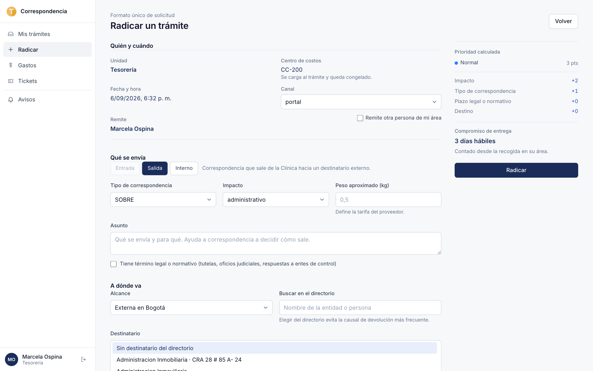
El segundo trayecto empieza en la ventanilla de correspondencia, donde se decide cómo sale cada envío y con qué costo, y termina con el seguimiento minuto a minuto hasta el destinatario.
Lo que trae el recorrido se recibe con un escaneo. Para cada envío la mesa muestra el costo estimado con cada proveedor y con el motorizado, y exige el número de guía cuando sale con proveedor.
El gasto queda cargado al centro de costos del áreaEl recorrido externo ordena las paradas por urgencia y cercanía; el interno, por sede, torre y piso. La coordinación previsualiza, ajusta y confirma; el motorizado recibe su ruta ordenada en el teléfono.
Con puerto listo para tiempos reales con tráfico cuando la Clínica lo pidaCon proveedor, los eventos de la guía; con motorizado, la posición que el teléfono reporta cada pocos minutos mientras va en ruta. Cada cambio de estado guarda fecha, hora y usuario en una bitácora inmutable.
El cierre lo sella el aplicativo, con fecha independiente del radicado de facturaUn puesto de escaneo con cuatro modos: recibir en la mesa, armar la planilla de despacho por transportador, adjuntar la guía de retorno firmada y consultar. La planilla se imprime con código por fila y la firma quien recibe el lote.
Constancia de que el sobre salió, en qué momento y en manos de quién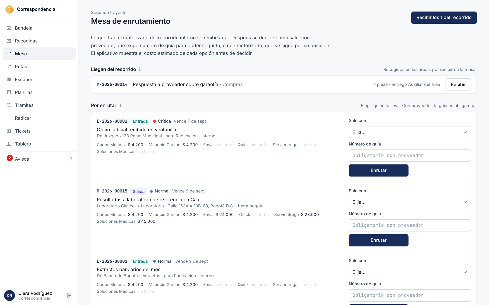
El tercer grupo sostiene la relación entre correspondencia y las áreas: la conversación sobre cada trámite, los tickets, los avisos automáticos y la información que cada área puede consultar sobre sus solicitudes, incluido el gasto asociado.
Correspondencia responde, corrige datos con el valor anterior en bitácora, ajusta la prioridad con motivo, cierra devoluciones, reabre con motivo y busca en todo el histórico por radicado, guía, asunto o destinatario, con filtros y paginación.
Cada comentario cruza la mesa y avisa a la otra parteEl área abre incidentes, reclamos, solicitudes o consultas, ligados a un trámite o generales. La coordinación responde, deja notas internas y cambia el estado; el área recibe cada respuesta en su campana y por correo.
Un ticket que espera respuesta desde el día hábil anterior genera alertaCampana en el aplicativo, correo según preferencia y aviso al dispositivo. Cada paso del trámite avisa a quien corresponde, y las reglas programadas alertan lo que vence mañana, lo que lleva días de silencio del transportador y las recogidas por registrar.
Una sola vez por trámite y por día, revisado cada hora hábilCada área ve el estado de lo suyo en lenguaje llano, con lo que sigue en cada caso, y el detalle de cada trámite con su evidencia. En Gastos consulta el costo estimado y el facturado de sus envíos, cargado a su centro de costos.
Descarga a la coordinación de las llamadas de seguimiento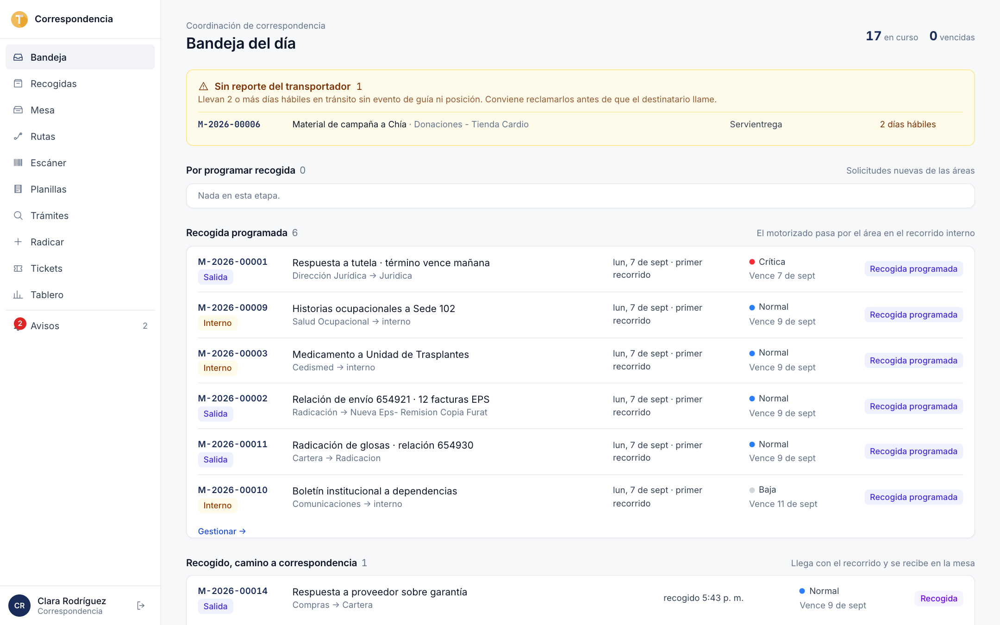
El cuarto grupo es lo que la Clínica administra por sí misma: la estructura, las personas, las tarifas y los recorridos, más el registro que deja cada acción para la auditoría interna.
Árbol de unidades con sede, torre y piso, cada una colgada de un centro de costos. Se crea, edita y mueve con su subárbol. Lo primero determina a quién se carga el gasto; lo segundo ordena el recorrido interno.
El centro de costos se congela al radicar: el histórico sobrevive a reorganizacionesEntrada con la cuenta institucional por Microsoft Entra ID. El departamento que entrega el directorio se traduce a una unidad con una tabla de equivalencias, y la persona queda asociada a su área desde la primera vez. Cinco roles con alcances distintos.
Los departamentos que aún carecen de equivalencia aparecen como pendientes en AdmonTarifas por proveedor, tipo, destino y peso con vigencia; motorizados y transportadores con su vía; horas de corte y salida de los recorridos internos. Todo parametrizable por la Clínica, con efecto inmediato en la mesa.
La coincidencia va de lo específico a lo generalCada transición, edición y aviso queda con usuario, fecha y hora en una bitácora inmutable, junto al rastro de guía o de posición. Reporte mensual programado a la Coordinación de gestión documental y exportación a Excel de cualquier consulta.
Disponible para auditoría interna, con cero reconstrucción manual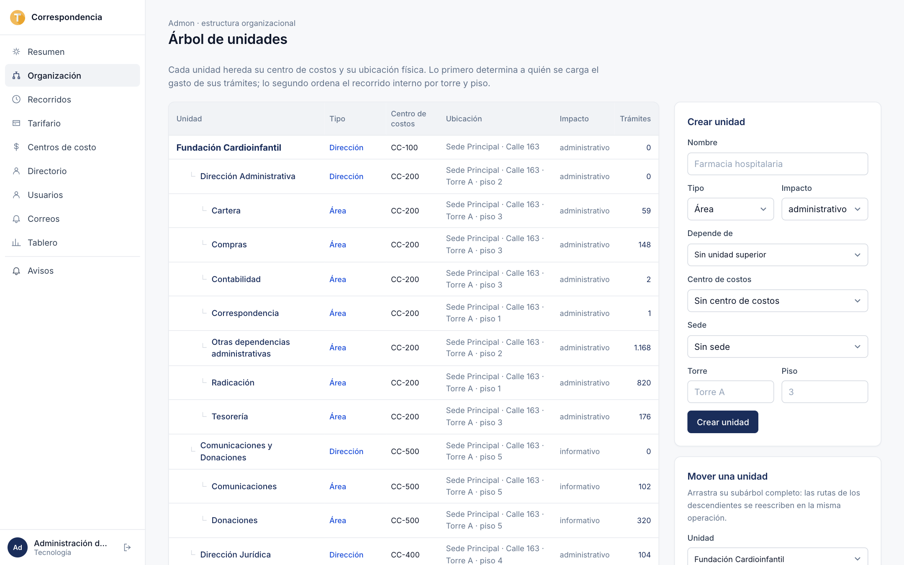
Los indicadores que el informe de agosto propuso para seguimiento continuo dejan de reconstruirse a mano. El aplicativo los calcula sobre los 3.812 registros históricos migrados, y cada uno arranca con su línea base y una meta que se acuerda en el discovery.
| Indicador | Línea base 2026-I | Meta año 1 | Desagregación |
|---|---|---|---|
| Tiempo promedio de entrega | 2,4 días | ≤ 2,0 días | Por tipo de correspondencia, área y responsable |
| Cumplimiento del ANS de 3 días hábiles | 87 % | ≥ 95 % | Con aviso al acercarse el vencimiento |
| Registros con fecha de cierre | 58 % | 100 % | El cierre lo sella el aplicativo |
| Solicitudes marcadas como urgentes | Por medir | ≤ 15 % | Por área solicitante, contra la matriz |
| Trámites tercerizados y su ciclo | 12 % · 3,1 d | Criterio revisado | Compara gestión interna y proveedor por tipo |
| Devoluciones por causal | Texto libre | 100 % clasificadas | Lista cerrada, ordenada por frecuencia |
| Gasto por centro de costos | Por consolidar | Facturado vs. estimado | Desviación acumulada por proveedor y por área |
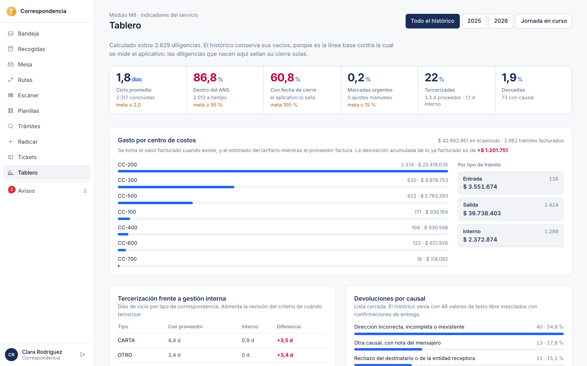
El reporte mensual sale del tablero y llega por correo a la Coordinación de gestión documental el primer día hábil de cada mes. Los umbrales de alerta se fijan en el discovery, junto con la política de uso.
Aquí se define la calidad del dato. Mientras el cierre dependa de transcribir la información al regresar, los registros vacíos seguirán apareciendo. La captura en el punto de entrega corrige el problema desde su origen, en el teléfono que el motorizado ya lleva.
Aplicación web progresiva (PWA) que se instala en el teléfono de cada motorizado, con icono propio y pantalla completa: las recogidas en las áreas y las entregas en orden. Al leer el rótulo de un sobre se abre su parada.
Instalación en los teléfonos actuales, Android o iOS, incluida en la capacitaciónFirma del receptor en pantalla, fotografía de la evidencia y sello automático de fecha, hora y ubicación. La firma es requisito para cerrar. Mientras haya algo en tránsito, el teléfono reporta la posición para el seguimiento.
Sustituye la planilla de recibido en papelCuando la entrega falla, el motorizado elige la causal de la lista cerrada y deja nota. El trámite vuelve a la mesa con su motivo, y cada dirección errada actualiza la ficha del destinatario en el directorio.
Cierra el ciclo de aprendizaje sobre direcciones erradasEl recorrido interno recoge en las áreas y trae a la mesa; los traslados entre dependencias se entregan en la misma vuelta. Al llegar a correspondencia, todo lo recogido se recibe de una vez.
Recoge el flujo del diagrama de mensajería internaServientrega, Soluciones Médicas y Envía reciben el lote con su planilla. El número de guía queda enlazado al radicado, los eventos del proveedor se registran contra él y su ciclo se mide igual que el interno.
La integración con las API de los transportadores queda prevista en el puerto de seguimientoEl motorizado recibe su recorrido armado como aviso en el teléfono. La aplicación conserva la ruta del día aunque falte la señal y sube lo capturado al recuperarla.
Elimina la digitación de regreso a la oficina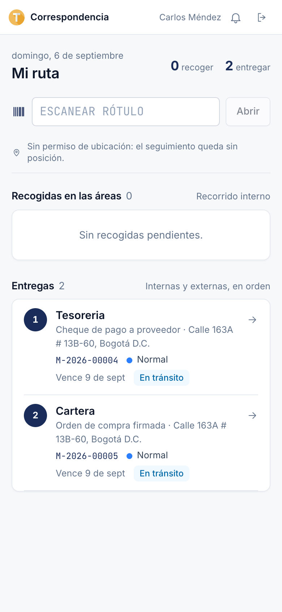
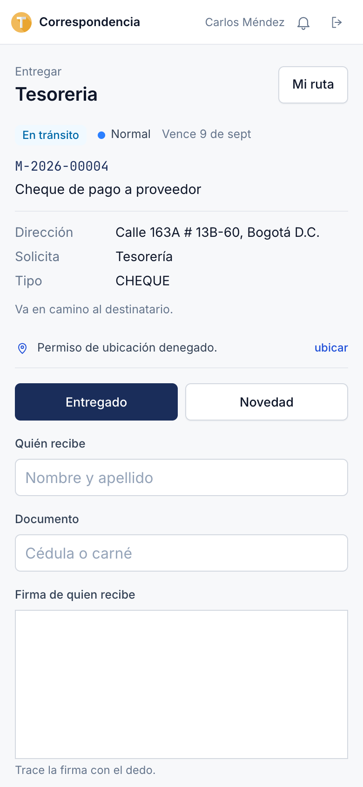
A continuación, algunas de las vistas del aplicativo en su operación: programar recogidas, armar recorridos, gestionar un trámite y despachar en lote con el escáner.
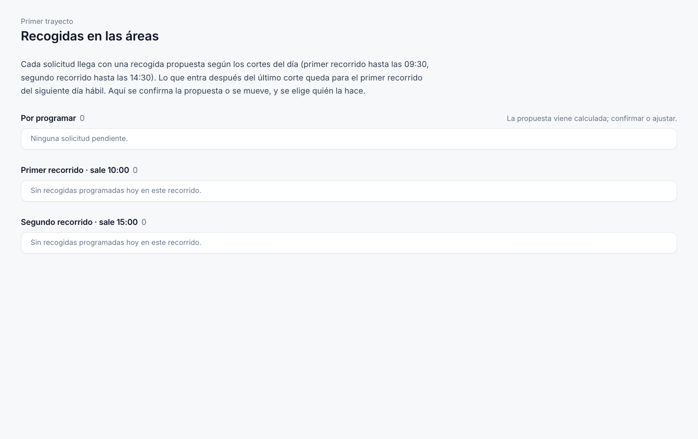
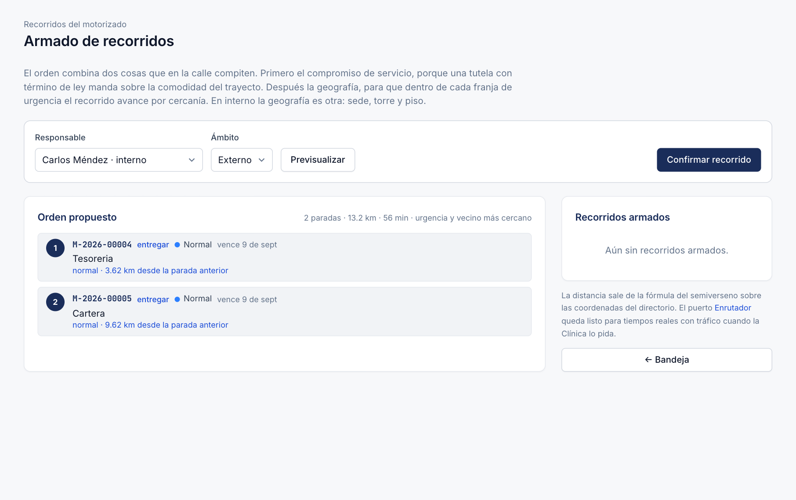
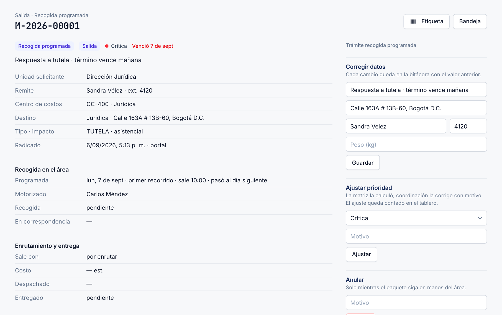
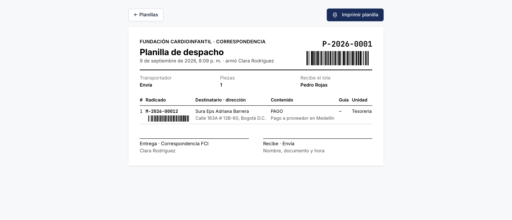
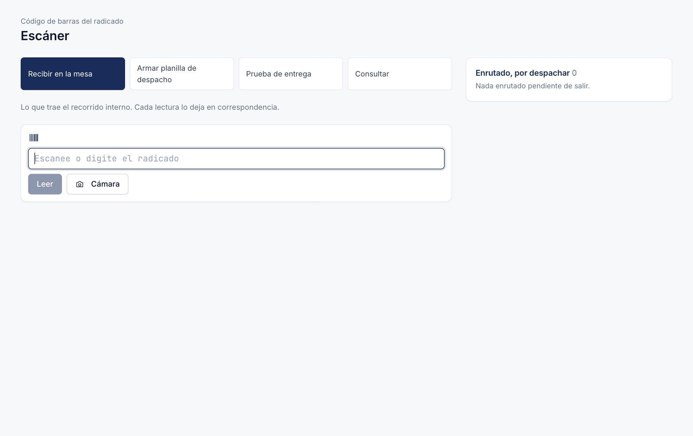
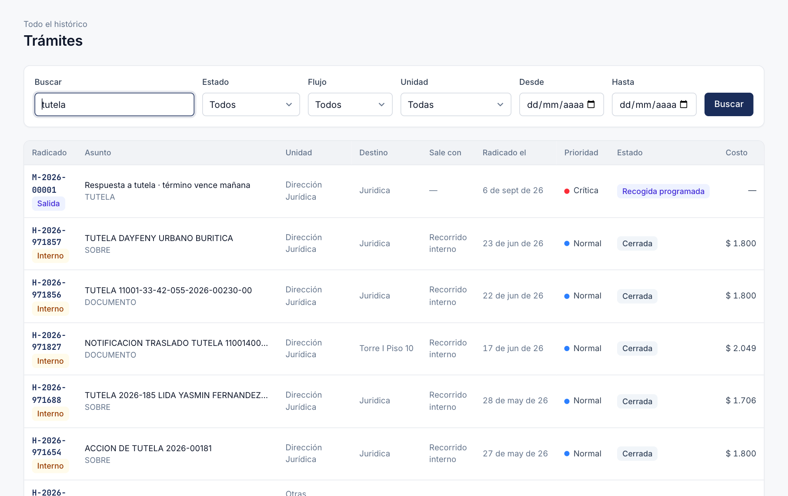
Lo que ve el área solicitante, la mesa de servicio, los avisos y la administración del sistema, en el mismo lenguaje visual.
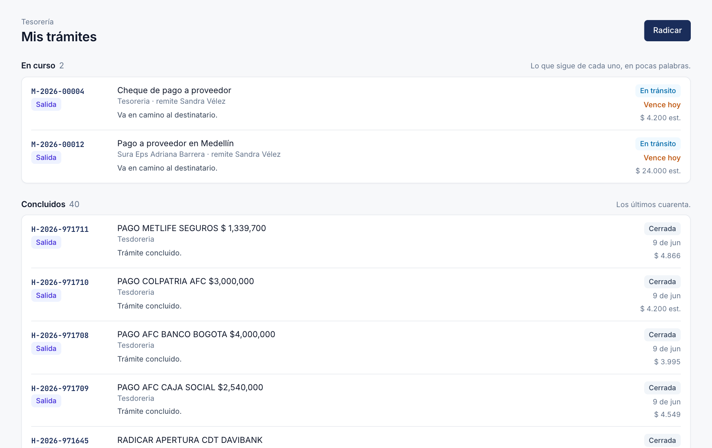
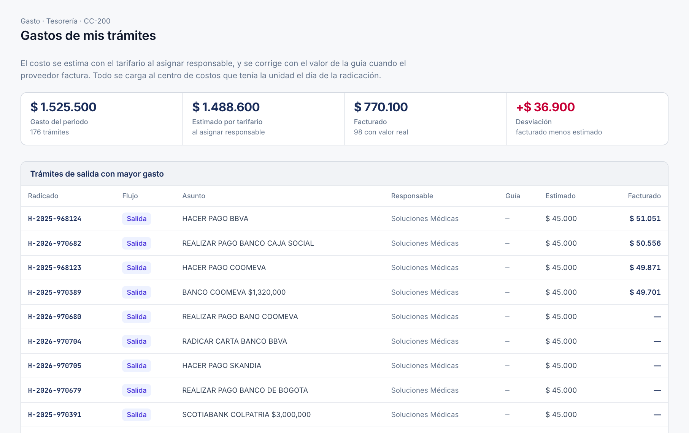
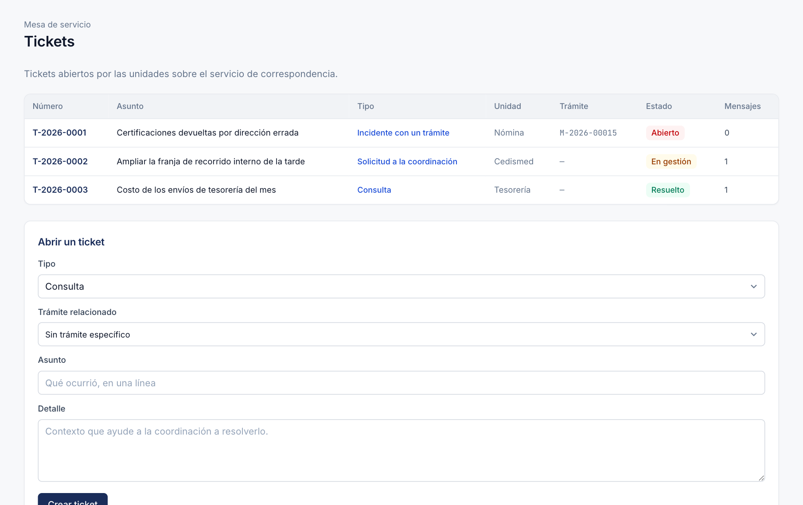
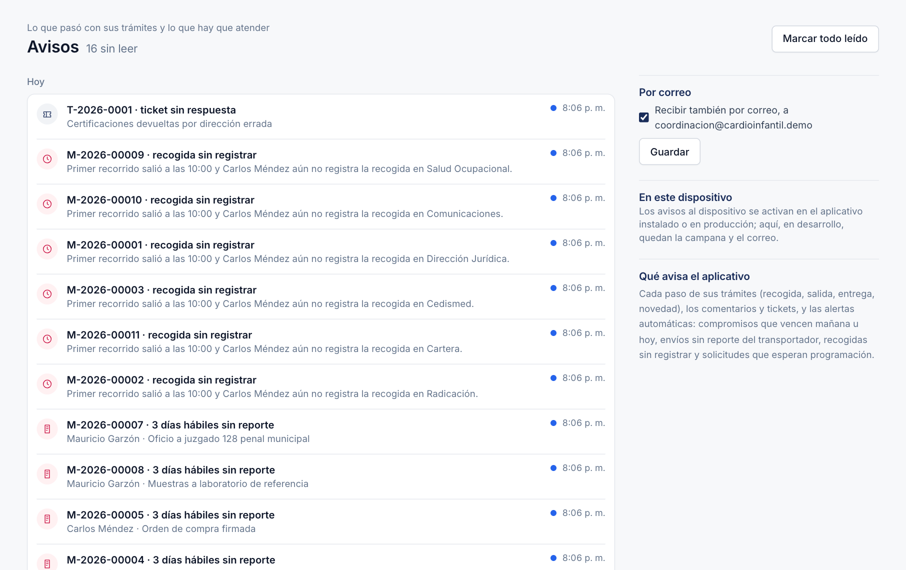
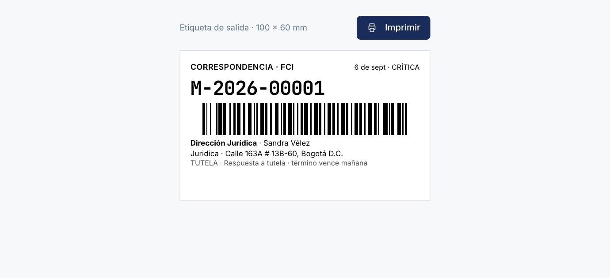
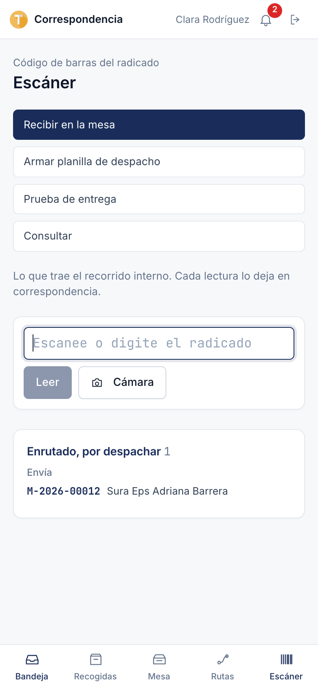
El proceso opera en un núcleo independiente de los servicios que lo rodean. Cada servicio se conecta por un puerto definido; así, un proveedor de nube puede reemplazarse por otro sin alterar la lógica del proceso, y la Clínica mantiene abierta su capacidad de elección tecnológica.
| Componente | Servicio | Función en el proceso | Operación y seguridad |
|---|---|---|---|
| Aplicativo web e instalable | Vercel · Next.js · PWA | Radicación, mesa, rutas, campo, tablero y administración desde un solo código; en el teléfono del motorizado se instala como aplicación. | Certificado TLS, sesión firmada, roles por perfil y bitácora inmutable. |
| Base de datos | Neon · PostgreSQL serverless | Trámites, estados, bitácora, estructura, tarifario e histórico migrado. | Copia diaria, recuperación a un punto en el tiempo, cifrado en reposo. |
| Evidencias de entrega | Amazon S3 · bucket privado | Firmas, fotografías y guías de retorno enlazadas al radicado. | Acceso por URL firmada temporal; credenciales de mínimo privilegio. |
| Correo | Amazon SES | Avisos a las áreas, a coordinación y a la Dirección; reporte mensual. | Remitente verificado en el dominio de la Clínica. |
| Identidad | Microsoft Entra ID · OIDC | Entrada con la cuenta corporativa; la unidad sale del departamento del directorio. | Registro de la aplicación en el tenant de la Clínica; tabla de equivalencias. |
| Avisos al dispositivo | Web Push · VAPID | Recorrido armado, entregas y alertas en el teléfono del motorizado. | Suscripción por dispositivo, revocable desde el aplicativo. |
| Reglas de alerta | Vercel Cron | Vencimientos, envíos en silencio, recogidas por registrar, tickets por responder. | Cada hora hábil, protegido con secreto. |
| Lector de código de barras | Lector USB · Code 128 | Recepción en la mesa, planillas de despacho y prueba de entrega con un escaneo. | Lo entrega Algoritmo T; se conecta y lee de inmediato. |
Residencia y tratamiento. Los servicios de nube operan en la región de Estados Unidos de cada proveedor, con cifrado en tránsito y en reposo, acceso restringido por credenciales de mínimo privilegio y acuerdo de encargado del tratamiento conforme a la Ley 1581 de 2012. La operación, el monitoreo y las actualizaciones de seguridad quedan cubiertos por la licencia de servicio.
Cinco perfiles trabajan sobre el mismo cronograma. El equipo se concentra en el discovery durante el primer mes y se abre a desarrollo desde la segunda quincena, con el analista de procesos acompañando hasta el cierre.
Responsable único ante la Clínica y de la coordinación integral del servicio.
Responsable de la fase 01 y de la coherencia entre el proceso y el aplicativo.
Responsable de los flujos, las pantallas y la experiencia de uso.
Responsable del aplicativo web, la captura en campo, los servicios y la seguridad de acceso.
Responsable de la migración, el tablero y la calidad funcional.
Gobernanza. Un responsable único por cada lado. Comité de seguimiento cada quince días, 6 sesiones de 60 a 90 minutos a lo largo del proyecto, con acta y decisiones registradas. Cada mes cierra con una aprobación escrita.
La inversión tiene dos rubros. El diseño y la implementación, que se pagan una vez contra las aprobaciones de las doce semanas, y la licencia anual de servicio, que sostiene la operación del aplicativo en la nube con la Clínica como propietaria de sus datos.
| Rubro | Ventana | Comprende | Valor antes de IVA | Valor a pagar |
|---|---|---|---|---|
| Diseño e implementación tres fases · 28 entregables |
12 semanas | Discovery, aplicativo web con sus dieciséis módulos, captura en campo con instalación en los teléfonos de los motorizados, migración del histórico, lector de código de barras, piloto y capacitación | $ 18.250.000 | $ 21.717.500 |
| Licencia anual de servicio software como servicio |
12 meses | Hospedaje, base de datos, evidencias, correo y avisos, respaldo diario, monitoreo, actualizaciones de seguridad y soporte | $ 10.000.000 | $ 10.000.000 |
| Primer año | 3 + 12 meses | $ 28.250.000 | $ 31.717.500 |
El diseño y la implementación llevan IVA del 19 % ($ 3.467.500). La licencia anual se factura como servicio en la nube, excluida de IVA, a la salida a producción, y cubre los doce meses siguientes; la renovación se pacta con el IPC del año inmediatamente anterior.
Qué cubre la licencia · el aplicativo opera en la nube bajo administración de Algoritmo T:
Salida del servicio · opcional, por una vez · $ 5.000.000. Traslado de la operación a un tercero o a la propia Clínica: entrega de la infraestructura, las credenciales y la documentación técnica, con acompañamiento durante la migración. Desde ese momento la Clínica asume directamente el hospedaje, la base de datos, el almacenamiento y el consumo de los servicios de terceros.
Los valores están expresados en pesos colombianos. El diseño y la implementación incluyen IVA del 19 %; la licencia anual se factura como servicio en la nube, excluida de IVA. Las retenciones aplican según el régimen tributario de la Clínica. La oferta tiene vigencia de 30 días calendario.
Cada mes cierra con una aprobación escrita sobre entregables verificables. Esa aprobación habilita el pago del periodo, de manera que la Clínica paga contra producto entregado y revisado. Son tres pagos: en las semanas 4, 8 y 12; el último incluye la anualidad de la suscripción.
| Pago | Fase | Qué se verifica | Concepto | Valor a pagar |
|---|---|---|---|---|
| Semana 4 discovery aprobado |
Fase 01 | Mapa del proceso, reglas de negocio, estructura organizacional, tarifario, backlog de mejoras y pantallas aprobados | Implementación 40 % $ 7.300.000 + IVA |
$ 8.687.000 |
| Semana 8 aplicativo en pruebas |
Fase 02 | Aplicativo web en la nube, en pruebas con la coordinación y dos áreas piloto, con el directorio corporativo conectado y el histórico migrado | Implementación 30 % $ 5.475.000 + IVA |
$ 6.515.250 |
| Semana 12 producción |
Fase 03 | Salida a producción, captura en campo operativa, piloto en calle cerrado y equipo capacitado | Implementación 30 % $ 5.475.000 + IVA Licencia anual $ 10.000.000 · IVA excluido |
$ 16.515.250 |
| Primer año | 3 pagos | $ 28.250.000 antes de IVA | $ 31.717.500 |
Qué revisa cada aprobación. La Clínica recibe los entregables del periodo con cinco días hábiles de anticipación a la sesión de cierre. En el comité se revisan uno por uno, se consignan las observaciones y se firma el acta. Las observaciones menores se incorporan dentro del periodo siguiente, con la aprobación ya firmada.
Ritmo del cronograma. El esquema es secuencial en su primer tramo: el aplicativo se construye sobre las reglas del discovery. Una demora en la retroalimentación de la semana 4 desplaza lo que sigue en la misma proporción. Por eso el supuesto de respuesta dentro de cinco días hábiles aparece entre las condiciones del servicio.
La anualidad de la suscripción. Se factura con el pago de la semana 12, a la salida a producción, y cubre los doce meses siguientes de operación en la nube. Cada factura se paga dentro de los 30 días siguientes a su radicación.
Cada pago se libera con la aprobación escrita de su periodo. Las tres cuotas de implementación suman $ 18.250.000 antes de IVA ($ 21.717.500 con IVA del 19 %); la licencia anual de $ 10.000.000 va excluida de IVA como servicio en la nube. El total del primer año es $ 31.717.500.
Doce semanas divididas en quincenas, desde el arranque hasta la salida a producción. El discovery abre y entrega las reglas; el diseño arranca en la segunda quincena, el desarrollo se solapa con la nube y la migración, y el piloto en calle con la capacitación cierra el tercer mes.
| Actividad | Q1 | Q2 | Q3 | Q4 | Q5 | Q6 |
|---|---|---|---|---|---|---|
| Sesiones de discovery y mapa del proceso | ||||||
| Reglas de negocio, estructura y tarifario | ||||||
| Diseño de pantallas y modelo de datos | ||||||
| Semana 4 · discovery aprobado | ||||||
| Desarrollo del aplicativo web | ||||||
| Nube, directorio corporativo y migración | ||||||
| Semana 8 · aplicativo en pruebas | ||||||
| Captura en campo y avisos al dispositivo | ||||||
| Piloto con coordinación y motorizados | ||||||
| Capacitación y documentación | ||||||
| Semana 12 · salida a producción |
Ritmo de decisión: 6 sesiones de 60 a 90 minutos, dos por mes. La primera del mes revisa avance; la segunda firma la aprobación. El piloto del mes 3 corre en paralelo con la operación actual durante dos semanas, con ambos registros activos, antes de retirar el archivo de Excel del flujo diario.
Estas condiciones soportan el cronograma y la inversión de las páginas anteriores. Las declaramos por adelantado para que la conversación empiece con las cartas sobre la mesa.